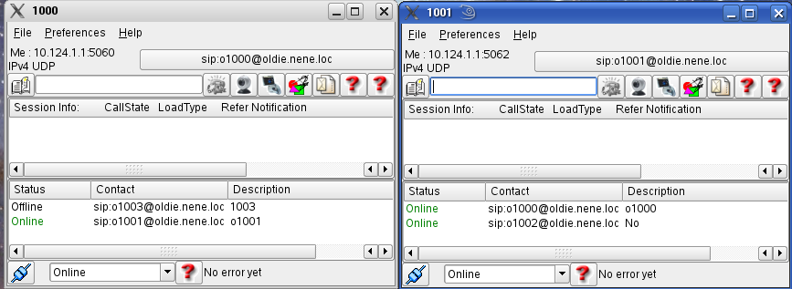
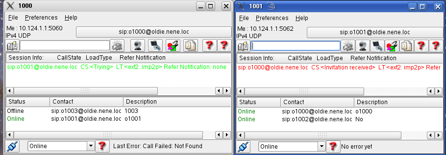
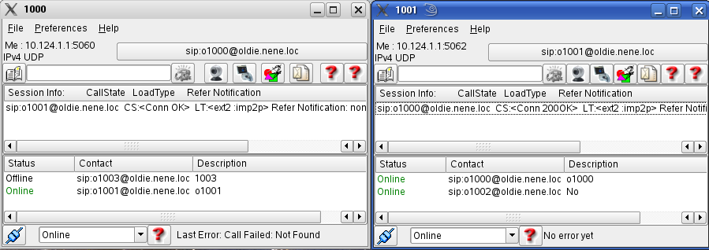
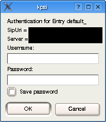

back to the ToC
KPhoneIS
User Manual:
How to Call
- KPhoneIS
User Manual:
How to Call
- Ways to enter the
SIP-URI
- Password Entry
- Remote Start
- AutoAnswer
- Start a
„Remote-Application“
Outgoing Call (Dial)
To start a session (as
to call someone) you may proceed as follows:
You have two main choices:
- First select the URI, then press
the session icon of your session type (audio, video, ...) or return for
audio
- Click a contact,
using the right mouse button and select a session type
The selection of the URI
may be achieved by:
- Using the phone book to select one; the dial field will be filled
automatically
- entering one into the dial field directly
- If you start from a contact, the URI is selected automatically

After pressing the session icon, the
partner is invited, the call appears in the session window, it's colour
is green

if she accepts the call is switched
through, the session info becomes black
The information about the call may be seen in the active call
window.

Incoming call
An incoming call is announced by:
- Appearing in the session info painted red
- the ring tone, if activated
You accept the call by double clicking the entry
Ways to enter the
SIP-URI
We have the following possibilities:
-
userid
-
userid@host
-
userid@host:port
-
tel: phone number
-
userid,DTMF-string
-
userid@host,DTMF-string
(1) is completed to
userid@proxy automatically; (5) to
userid@proxy,DTMF-string.
The DTMF-String is sent
in digital form, as soon a the call is active.
(4) can be used to
address a telephone gateway, if the proxy supports this.
Password Entry
The password is asked, if the proxy agent is requesting for one. Then a
window pops up:

The first four lines contain information about your connection:
- Authentication for Entry: your
tab in the kphonesirc database
- SipUri : Your sipuri
- Server : The proxy
agent, your are connected to.
The entry fields:
- Usename : enter your
user name here. If kphone still knows your user name, it will display it
- Password: enter your
password here
- Save password: select,
if you want your password written into the kphonesirc database
You may solicit your entries by pressing OK, or cancel them, by
pressing Cancel
Remote Start
AutoAnswer
If the terminating side has AutoAnswer active, any
call will be accepted after the AA-Timer runs out.
The AA-timer may compete with the CFnA timer.
Start a
„Remote-Application“
The feature
differs from AutoAnswer that the call is started immediately.The
feature can be used for “Generalized
Sessions“ only!
To do this, Remote Start must be activated at both
ends. If this is done, a infobox appears after dialling, you may
(or not) select remote start then.
back
to the ToC